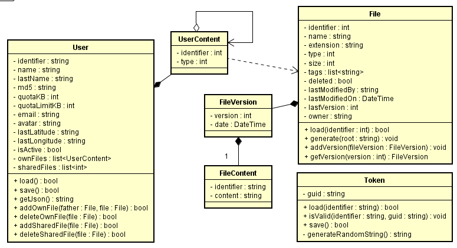
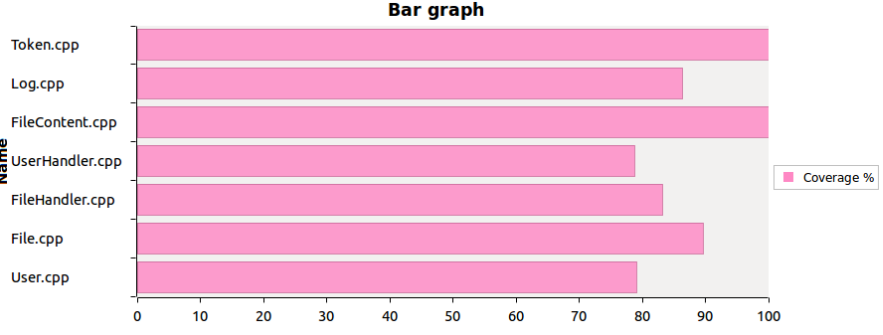
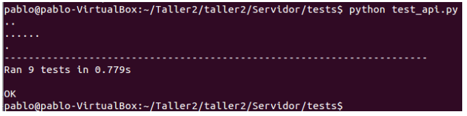
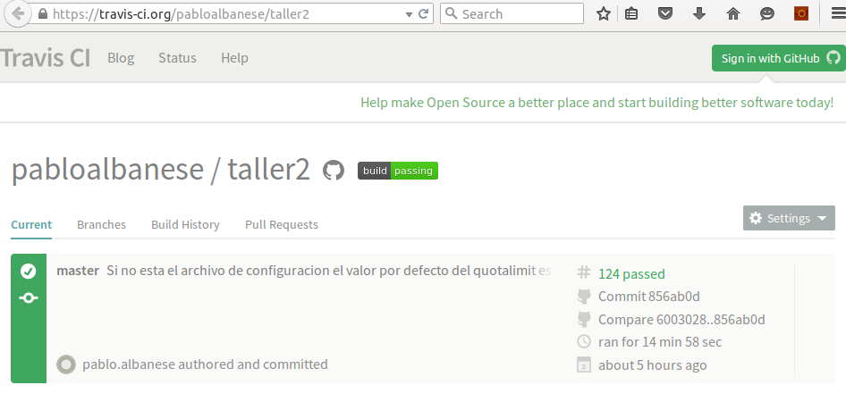
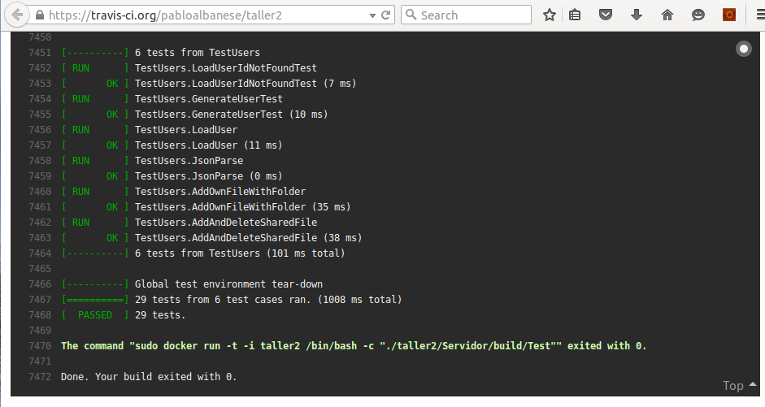

Documentación técnica¶
Ambiente de desarrollo¶
El código se encuentra dividido en dos grandes proyectos los cuales son:
- Cliente, desarrollado en Java con IDE Android Studio.
- Servidor, desarrollado en C++ con el IDE Eclipse C++.
Librerías y compilación Servidor¶
Librerías utilizadas:
- gcc 4.0.+
- Node.js
- NPM
- RocksDB
- JsonCPP
- Mongoose
Pasos para compilación:
- Dirigirse al directorio raíz del repositorio.
- Ir a carpeta Servidor: cd Servidor
- Ejecutar archivo CompileServer.sh: ./CompileServer.sh
- Ir a carpeta build: cd build
- Ejecutar programa Servidor: ./Servidor
- Por consola se indicará el mensaje: Mongoose iniciando en puerto: 8080
Librerías y compilación Cliente¶
Librerías utilizadas:
- Android Studio 1.3.+
- Java 7+
Pasos para compilación:
- Abrir Android Studio
- Importar proyecto ubicado en carpeta Cliente
- Ejecutar proyecto.
Arquitectura¶
Clases¶
Diagrama de clases UML¶
A continuación visualizamos un diagrama de clases participantes, estas clases son las principales del proyecto Servidor y las que dan origen a su modelo de datos:
Descripción de las clases utilizadas¶
User
| Campo | Tipo | Descripción |
|---|---|---|
| identifier | string | Identificador con el que se logea en la aplicación |
| name | string | Nombre del usuario |
| lastName | string | Apellido del usuario |
| md5 | string | Password en MD5. |
| quotaMB | int | Límite de almacenamiento permitido al usuario. |
| quotaLimitMB | string | Uso actual del almacenamiento |
| string | Es el identificador con el que se logea en la aplicación | |
| avatar | string | Email del usuario |
| sharedFiles | array | Array con los archivos que se le compartieron al usuario |
| ownFiles | array | Array con los archivos creados por el usuario |
| lastLatitude | string | Latitud de la última localización del usuario |
| lastLongitude | string | Longitud de la última localización del usuario |
| active | bool | true ó false dependiendo de si está activo ó no el User |
File
| Campo | Tipo | Descripción |
|---|---|---|
| id | int | Identificador generado automaticamente |
| name | string | En caso de archivos no contiene la extensión |
| extension | string | Extensión del archivo |
| type | int | Puede ser File=1 ó Folder=2 |
| sizeMB | int | Tamaño en MB del file. Se utiliza solo en caso de File. |
| tags | array | Palabras claves que identifican al archivo (etiquetas) |
| delete | bool | True si el archivo se encuentra eliminado. False en caso contrario. |
| lastModifiedBy | string | Identifier del ultimo usuario que modifico el archivo |
| lastModifiedOn | date | Contiene el número de la última versión del archivo |
| lastVersion | int | Array con los archivos creados por el usuario |
| versions | array | Array con elementos que contienen número y file_identifier. |
FileVersion
| Campo | Tipo | Descripción |
|---|---|---|
| identifier | int | Identificador único del archivo |
| fileContentIdentifier | string | Identificador de FileContent |
| date | string | Fecha de version |
FileContent
| Campo | Tipo | Descripción |
|---|---|---|
| identifier | int | Identificador único del archivo |
| content | string | Contenido del archivo |
Estas clases son serializadas en RocksDB en formato JSON.
El servidor contiene clases las cuales brindan el servicio de manipulación de estas clases, las cuales son FileHandler y UserHandler.
REST API¶
Listado de funcionalidades soportadas por la API REST
| # | Verbo | URL | Descripción |
|---|---|---|---|
| 1 | GET | /users/auth?identifier=[identifier]&md5=[md5] | Autentica a un User. Devuelve un token de autenticación |
| 2 | PUT | /users/[identifier] | Modifica datos del usuario |
| 3 | GET | /users/[identifier] | Obtiene los datos de un usuario |
| 4 | POST | /users | Crea un nuevo User |
| 5 | DELETE | /users/[identifier] | Setea como inactivo el User |
| 6 | GET | /metafiles/[metafile_identifier] | Retorna un archivo con [metafile_identifier] |
| 7 | DELETE | /metafiles/[metafile_identifier] | Eliminación lógica de metadatos de archivo |
| 8 | PUT | /metafiles/[metafile_identifier] | Modificación de metadatos archivo |
| 9 | GET | /files/[metafile_identifier]/[version] | Descarga de archivo |
| 10 | POST | /files Autentica a un User. | Subida de archivo |
| 11 | POST | /files/share/[fileID] | Comparte el File de id [fileID] a todos los Users pasados por parámetro |
| 12 | POST | /files/recovery/[fileID] | Quita de papelera al File con id [fileID] |
| 13 | DELETE | /files/share/[fileID]?user=[user_identifier] | Quita la relación entre el File de id [fileID] con todos los usuarios pasados por parámetro. |
Detalle:
1./users/auth?user=[identifier]&md5=[md5] (GET)
Retorna:
{ “result” : “[OK/ERROR]” , “message” : “[completar en caso de error]”, token : ‘[guid]’ }
Nota
el guid es autogenerado por el servidor.
2. /users/[identifier] (PUT)
Parámetros:
{
token : ‘[guid]’
, identifier : ‘[identifier]’
, name : ‘[name]’
, lastName : ‘[lastName]’
, email: ‘[email]’
, avatar: ‘[avatar]’
, lastLocation: { latitude : ‘’, longitude : ‘’ }’
}
Retorna:
{ result : [OK/ERROR] , message : ‘[completar en caso de error]’ }
Nota
el campo MD5, quotaMB, quotaLimitMB no se puede modificar con este método.
3. /users/[identifier]?token=[token] (GET)
Retorna:
{
identifier : ‘[identifier]’
, name : ‘[name]’
, lastName : ‘[lastName]’
, root: ‘[root]’
, quotaMB: ‘[quotaMB]’
, quotaLimitMB: ‘[quotaLimitMB]’
, email: ‘[email]’
, avatar: ‘[avatar]’
, lastLocation: { latitude : ‘’, longitude : ‘’ }’
, ownerFiles: ‘[array con identifier de metafiles con jerarquias de carpetas]’
, sharedFiles: ‘[array con identifier de files]’
}
Nota
el campo md5 no se retorna en este método por cuestiones de seguridad.
4. /users (POST)
Parámetros:
{
“token” : “[guid]”
, “identifier” : “[identifier]”
, “name” : “[name]”
, “lastName” : “[lastName]”
, “md5” : “[md5]”
, “email” : “[email]”
, “avatar” : “[avatar]”
, “lastLatitude” : “[lastLatitude]”
, “lastLongitude” : “[lastLongitude]”
}
Retorna:
{ “result” : “[OK/ERROR]” , “message” : “[completar en caso de error]” }
Nota
debe validar que el identifier no exista, en caso de que si exista devolver error con el mensaje. El valor de quotaLimitMB debe ser obtenido por parámetro de configuración.
5. /users/[identifier]?token=[token] (DELETE)
Pasa a inactivo el user.
Retorna:
{ “result” : “[OK/ERROR]” , “message” : “[completar en caso de error]” }
6. /metafiles/[metafile_identifier]?token=[token] (GET)
Retorna:
{
token : ‘[guid]’
, name: ‘[identifier]’
, extension: ‘[lastName]’
, type: ‘[root]’
, content: ‘[content]’
, sizeMB: ‘[sizeMB]’
, tags: ‘[tags]’
, delete: ‘[delete]’
, lastModifiedUser: ‘[useridentifier]’
, lastModifiedOn: ‘[lastModifiedOn]’
, lastVersion: ‘[lastVersion]’
, versions : { [ version : [version], file : [file_identfier], date : [date] ] }
}
7. /metafiles/[file_identifier]?token=[token] (DELETE)
Retorna:
{ result : [OK/ERROR] , message : ‘[completar en caso de error]’ }
Nota
setea el atributo delete en true.
8. /metafiles/[file_identifier] (PUT)
Parámetros:
{
token : ‘[guid]’
, id : ‘[file_identifier]’
, name: ‘[name]’
, extension: ‘[lastName]’
, type: ‘[type]’
, content: ‘[content]’
, sizeMB: ‘[sizeMB]’
, tags: ‘[tags]’
, lastModifiedUser: ‘[user_identifier]’
}
Retorna:
{ result : [OK/ERROR] , message : ‘[completar en caso de error]’ }
Nota
tiene que completar el campo lastModifiedOn con la fecha y hora actual.
9. /files/[metafile_identifier]/[version]?token=[token] (GET)
Retorna: Archivo
Nota
si no esta /[version] especificado se tiene que devolver la última versión.
10. /files (POST)
Parámetros:
{
token : ‘[guid]’
, name: ‘[identifier]’
, owner : ‘[user_identifier]’
, extension: ‘[lastName]’
, type: ‘[type]’
, content: ‘[content]’
, sizeMB: ‘[sizeMB]’
, tags: ‘[tags]’
, father: ‘[file_identifier]’
, content: ‘[contenido del archivo]
, version: ‘[version]’
, forceCreation: ‘[bool]’
}
Retorna:
{ result : [OK/ERROR] , message : ‘[completar en caso de error]’, metafile : [metafile_identifier] } }
Nota
La idea de este método es que si se le pasa un metafile_identfier entonces va a crear una nueva versión del archivo y se la va a sumar a la que ya existían y actualizar la información del metafile, en caso de que no le pase un metafile_identifier entonces va a crear un nuevo metafile. Cuando se quiere actualizar una versión y se pasa en el parámetro version una versión menor a la actual hay que devolver un error de “old version” a no ser que el parámetro forceCreation venga en true, en ese caso procedemos normalmente.
12. /files/search (POST)
Parametros:
{
token : ‘[guid]’
, tag: ‘[identifier]’
, extension: ‘[extension]’
, own: ‘[user_identifier]’
, name: ‘[name]’
, delete: ‘[delete]’
}
Retorna: Array de files encontrados.
13. /metafiles/recovery/[metafile_identifier] (POST)
Retorna:
{ result : [OK/ERROR] , message : ‘[completar en caso de error]’ }
14. /metafiles/share/[metafile_identifier] (POST)
Parametros:
{
token : ‘[guid]’
, users : [ identifier1, identifier2 ]
}
Retorna:
{ result : [OK/ERROR] , message : ‘[completar en caso de error]’ }
Nota
tiene que buscar el los user_identifier pasados por parámetro y agregarle al campo sharedFiles el identificador file_identifier.
15. /metafiles/[metafile_identifier]/share/[user_identifier]?token=[token] (DELETE)
Retorna:
{ result : [OK/ERROR] , message : ‘[completar en caso de error]’ }
Nota
busca el user_identifer pasado por parámetro y eliminarle del array sharedFiles el item file_identifier.
Pruebas¶
Hemos utilizado los 2 herramientas de testing para el servidor
- Test unitarios: para testear las clases base que dan servicios a la API Rest.
- Test python: para testear la API rest de forma automatizada y sin tener que poseer un cliente Android y para probar el rendimiento de la API Rest.
En la arquitectura de nuestro TP definimos 4 entidades básicas que son:
- User
- File
- FileContent
- Token
Y 2 clases que brindan servicios a la API utilizando estas 4 entidades las cuales son:
- FileHandler
- UserHandler
Los test de cobertura que realizamos abarcan mas del 80% del codigo fuente de estas clases:
La imagen fue obtenida utilizando la herramienta gcov de gcc + Eclipse para interpretar los datos.
En cuanto a los test python logramos tener tener todos los métodos de la API rest testeados en 9 test diferentes:
En el documento README incluido en este documento se detalla como ejecutar estos tests.
También hemos realizado un test de rendimiento en Python el cual a arrojado los siguientes resultados:
- Tiempo en buscar info de un usuario 100 veces ...... 6.15s
- Tiempo en descargar archivo de 500 kb 100 veces ...... 4.8s
- Tiempo en buscar info de un usuario 500 veces ...... 38.62s
- Tiempo en descargar archivo de 500 kb 500 veces ...... 34.15s
Docker¶
Hemos hecho uso de la herramienta Doker para verificar que nuestro Servidor pueda iniciarse en un ambiente que no sea el de nuestras propias máquinas. Para esto lo que hicimos fue el script de Doker para instalar la maquina virtual.
Los pasos para ejecutar el docker file están también incluidos en el archivo README y son los siguientes:
- Instalación de docker
wget -qO- https://get.docker.com/ | sh
- Dirigirse a la carpeta Servidor/dockerbuild y ejecutar:
sudo docker build -t taller2 .
- Luego para abrir una consola en la virtual machine del Doker hacer:
sudo docker run -t -i taller2 /bin/bash
4. Por último para ejecutar el servidor en la virtual machine del docker: ./taller2/Servidor/build/Servidor
El script que de Docker que utilizamos es:
FROM stackbrew/ubuntu:14.04
RUN apt-get update -y
RUN apt-get install -y cmake-curses-gui
RUN apt-get install -y git
RUN apt-get install -y build-essential checkinstall
RUN apt-get install -y zlib1g-dev
RUN apt-get install -y libbz2-dev
RUN apt-get install -y libsnappy-dev
RUN apt-get install -y libgflags-dev
RUN apt-get install -y wget
RUN apt-get install -y npm
RUN apt-get install -y scons
RUN apt-get install -y zip
# Install cmake
RUN wget http://www.cmake.org/files/v3.3/cmake-3.3.2.tar.gz
RUN tar xf cmake-3.3.2.tar.gz
RUN cd cmake-3.3.2 && ./configure && make && make install
# Install mongoose
RUN npm install -y mongoose
# Install rocksdb
RUN git clone https://github.com/gflags/gflags.git gflags && cd gflags && mkdir build && cd build && cmake .. && make && make install
RUN git clone https://github.com/facebook/rocksdb.git rocksdb && cd rocksdb && make && make install
# Install jsoncpp
RUN wget http://downloads.sourceforge.net/project/jsoncpp/jsoncpp/0.5.0/jsoncpp-src-0.5.0.tar.gz
RUN tar -xvzf jsoncpp-src-0.5.0.tar.gz
RUN cd jsoncpp-src-0.5.0 && scons platform=linux-gcc && cd libs/linux-gcc-4.8 && cp libjson_linux-gcc-4.8_libmt.a /usr/local/lib/
# Install gtest
RUN wget https://github.com/google/googletest/archive/release-1.7.0.zip && unzip release-1.7.0.zip
RUN cd googletest-release-1.7.0 && ls && mkdir mybuild && cd mybuild && cmake - DBUILD_SHARED_LIBS=ON -Dgtest_build_samples=ON -G"Unix Makefiles" .. && make && cp -r ../include/gtest/ /usr/local/include/ && cp lib*.so /usr/local/lib/
RUN sudo bash -c 'echo /usr/local/lib >> /etc/ld.so.conf ' && sudo ldconfig
# Download repository
RUN git clone https://github.com/pabloalbanese/taller2.git && cd taller2/Servidor && mkdir lib
RUN cp /usr/local/lib/librocksdb.a taller2/Servidor/lib/
RUN cp /usr/lib/x86_64-linux-gnu/libbz2.a taller2/Servidor/lib/
RUN cp /usr/lib/x86_64-linux-gnu/libz.a taller2/Servidor/lib/
RUN cp /usr/lib/libsnappy.a taller2/Servidor/lib/
RUN cp /usr/local/lib/libjson_linux-gcc-4.8_libmt.a taller2/Servidor/lib/
RUN cd taller2/Servidor && sh CompileServer.sh
Travis¶
Nuestro TP esta integrado a Travis, para esto tuvimos que vincular nuestro repositorio GitHub con Travis el cual hace uno de un script Docker para inicializar su maquina virtual. En cada commit que se hace al repositorio se ejecuta el Travis que corre todos los test unitarios que tenemos, como podemos visualizar en la siguientes imagenes:
 Links¶
- Tutorial instalacion Node.js
- Tutorial instalacion RocksDB
- Tutorial instalacion Node.js
- Pagina de descarga Mongoose
- Pagina de descarga Android Studio
- Tutorial instalacion Node.js
- Repositorio Github
- Listado de issues (tickets)
- ‘Travis configurado para nuestro desarrollo <https://travis-ci.org/pabloalbanese/taller2>’_